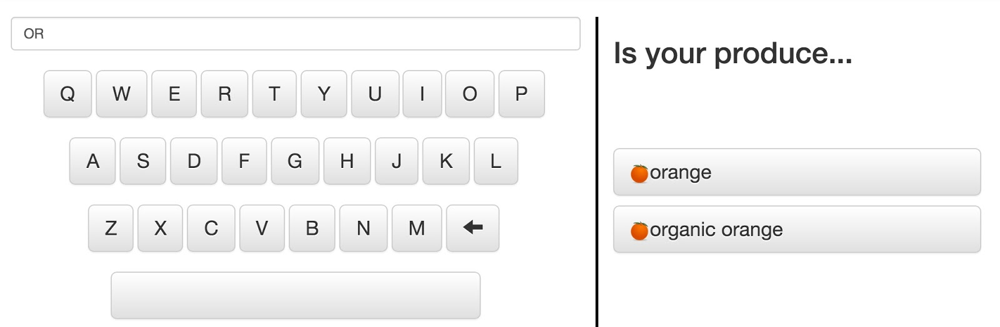
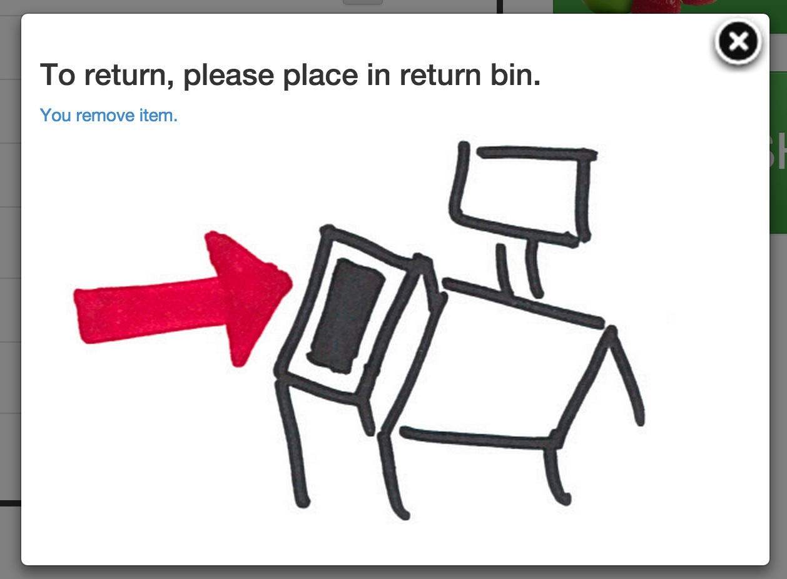
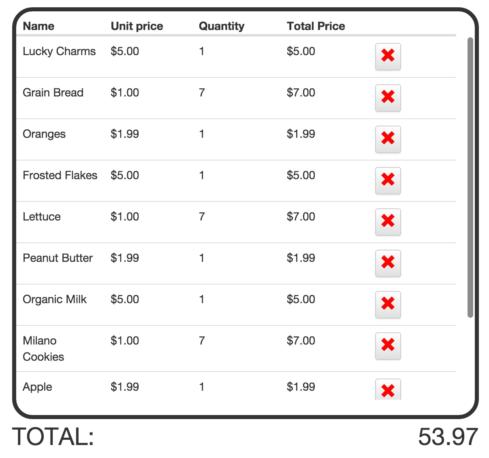

Heuristic Evaluation Response
In accordance to the heuristic evaluation, there were several minor changes as well as major changes to our prototype. The minor/major categorizations are based not by their impact to a user, but to the time/resources necessary to implement a fix.
Minor Changes
Produce Button
Since the word “produce” has multiple meanings, it was unclear whether produce meant food or to create items. Therefore, we add a visual to the button to clarify its meaning.
Larger X buttons
We increase the size of the X buttons that remove items so that it is better to use as a touch screen.
Small Aesthetic Changes
There were many small aesthetic issues (misaligned text, incorrect sizes, layout) that were left in our prototype. These issues have been fixed along with any spelling issues.
Working keyboard
The current keyboard (that lets users enter the name of produce rather than using image recognition) was not functional. This caused the purpose to be unclear. When text is typed with the keyboard, it uses substring matching with a list of pre-approved items.

Major Changes
Successfully delete items
When a user presses the ‘x’ button next to an item on the main checkout page, the item is now actually removed the shopping list. When the ‘x’ button is pressed for non-produce items a screen will pop up, prompting the user to place the item in the return bin. Because we have no physical system for this prototype, users can click the small blue text saying “You remove item” to indicate that the action was completed.

Add items
Items can now be added to the main shopping list. While there is no physical system for users to interact with, there is now a way for users to simulate actually checking out items.
Dynamically changing cost
For the purpose of finishing the initial online prototype, all of the final prices were hard-coded and did not reflect changes made to the shopping list. This incorrect final price is seen on the main checkout page and all of the payment pages. The final prototype updates the final price when a user returns or adds an item on all screens where it is seen.
Multiple scanned items
If successful, this redesign would be used for checking out many items - not just a few items as the used now. Therefore, it is necessary to enable scrolling to see many scanned items. This is currently just an enabled ability. No affordances are added, except for the fact that a user will have scanned those item him or herself (and therefore knows there are many items in the list)

Note
Out of the sixteen suggested changes in the heuristic evaluation, all except five were implemented. These were not implemented based on team consensus that the changes would not add any additional value or would detract from the design.